Fold a wish. Fly it there.
Throw a paper plane and glide it across twenty-one cities painted in ink and watercolour, from Paris and Tokyo to Rio and Toronto.
Drag to aim · release to throw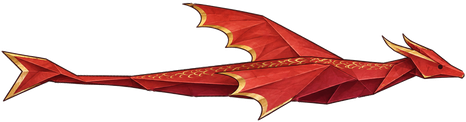
Throw, fly, upgrade, meet the residents.
Every flight pays for the next one, and every upgrade takes you farther across the city.
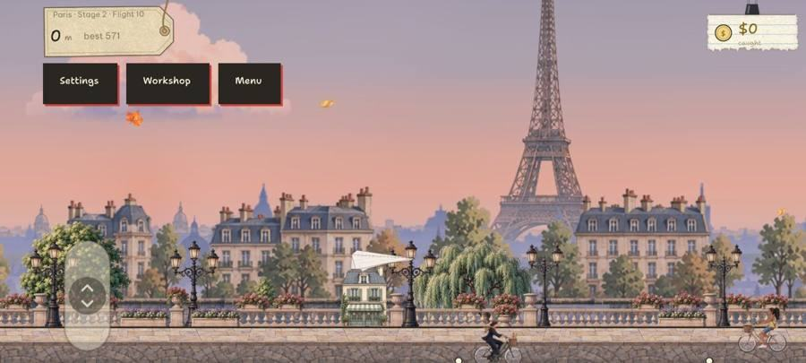
Draw back and let go
Drag back from the launcher and release. How far you drag sets the power, and the angle sets the launch.
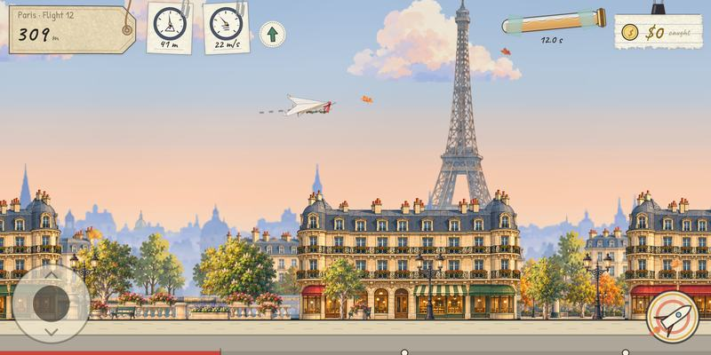
Climb, dive, boost
Two thumbs steer the plane. Glide as far as the air will hold it, catch the coins along the way, and get past each keeper with a BONK!
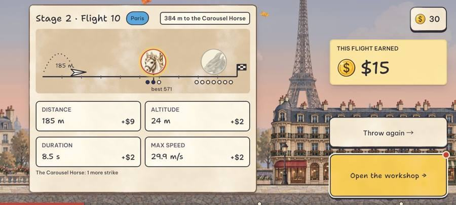
Land, then upgrade
The landing card shows what the flight earned, row by row. Spend it on the next step of a part in the Workshop, then throw again, a little farther than before.
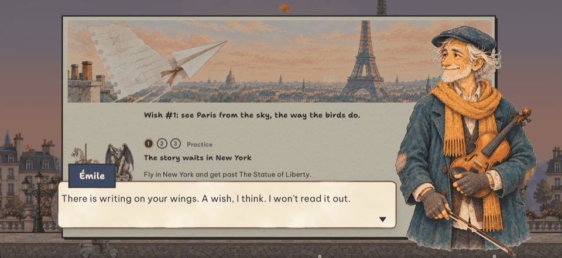
Meet the residents
Émile in Paris, Imani in New York and Hana in Tokyo have stories of their own. Their quests open Stages 2 and 3, and they speak in English voices.
The lamp clicks on.
A boy by the window writes a wish on a notebook page, folds it into a paper plane and lets it go. The glass melts into ink and watercolour, and suddenly the plane is over Paris.
Glide it past rooftops and clouds for as long as the air will hold it, then build a better plane in the Workshop: a stronger launcher, wider wings, a tougher hull, a tiny engine. Every upgrade carries the wish a little farther.
And somewhere along the way, each city's keeper wakes: a stone gargoyle above Paris, a yellow taxi tearing down a New York avenue, the Sphinx rising from the sand. Each one introduces itself the first time you meet. Hit its weak points for a big BONK!, land the last blow for a KO!, and it grins and takes a bow.
Every city has three Stages, each with tougher keepers. In Paris, New York and Tokyo you meet Émile, Imani and Hana. Talk with them, in English voices, and their quests open Stages 2 and 3. Follow The Unfinished Song across Paris and New York, and open the Travel journal from Menu.
Where the plane goes next.
Throw your paper plane across the cities and enjoy the wonders of our world. You won't only fly through today's skies, but across the whole story of human civilisation. Fly back in time to watch the Pyramids rise, or to London in the Victorian age. Fly ahead to a future where people voyage to the farthest stars. Then cross into fictional worlds and their cities to meet the characters you love. It's all waiting for you.
That is where we are headed, not what is in the app today. Today there are twenty-one cities of the present day, and each update carries the plane a little farther.
Every city keeps its wish behind a keeper.
Each keeper comes from its city's history, legends and streets. An Elite wakes first; the Boss guards the wish itself. Nobody gets hurt: each one gives way with a grin, and five of them ask for a hand instead, with a minigame of their own. Read every city's story, or find them by continent.
-


Paris
- The Carousel Horse
- In 1662 Louis XIV held a horseback festival by the Louvre so grand that the square is still called the Place du Carrousel. Tradition says the carousel grew out of it.
- The Stryge
- It looks medieval but is younger: the brooding chimera was set on Notre-Dame's high gallery during the restoration begun in the 1840s.
-


New York
- The Taxi
- New York's first motor cabs, in 1907, were red and green. In 1967 the city made yellow the law for its licensed cabs.
- The Statue of Liberty
- She crossed the Atlantic in 1885 in 214 crates, a gift from the people of France. Gustave Eiffel designed the iron skeleton inside her.
-


Tokyo
- The Lucky Cat
- Legend says a cat at a small gate beckoned a lord in from a storm in old Edo, today's Tokyo, just before lightning struck where he had stood.
- The Kabuki Actor
- Around 1603 a dancer named Izumo no Okuni began performing on the dry bed of Kyoto's Kamo River, and kabuki was born.
-


Cairo
- The Camel
- A newcomer at Giza: when the pyramids rose, donkeys carried the builders' loads and boats moved the stone.
- The Sphinx
- Carved from a single ridge of Giza's bedrock some 4,500 years ago, it spent centuries buried to its shoulders in sand.
-


Rio de Janeiro
- The Cable Car
- Sugarloaf's cableway opened in 1912, by most counts only the third passenger cableway in the world.
- The Samba Dancer
- Since 1984 Rio's samba schools have paraded through Oscar Niemeyer's Sambadrome, with thousands of dancers and drummers each.
-


London
- The Tower Raven
- Legend says that if the ravens ever leave the Tower of London, the Crown will fall, so at least six are always kept there.
- The Guildhall Giant
- Old tales say giants guarded Britain before London was founded, and carved giants have led the Lord Mayor's procession for centuries.
-


Sydney
- The Cockatoo
- Sydney's cockatoos taught each other to flip open wheelie bins, and the trick spread from suburb to suburb.
- The Lyrebird
- The great mimic can copy almost any sound it hears, and its tail has been on Australia's ten-cent coin since 1966.
-


Beijing
- The Palace Lion
- Bronze lions have guarded the Forbidden City's gates for six centuries, the male's paw resting on an embroidered ball.
- The Xiezhi
- A one-horned beast of legend that could tell the guilty from the innocent. It rides the roof ridge of the Hall of Supreme Harmony.
-


Rome
- The Capitoline Lion
- Two lions of black Egyptian basalt guard the foot of Michelangelo's ramp up the Capitoline Hill, the heart of ancient Rome.
- The Freed Gladiator
- A gladiator who fought well enough could win his freedom, and a plain wooden sword, the rudis, as proof.
-


San Francisco
- The Gripman
- Gripmen pull the cable cars up the hills, and the crews are famous for ringing their bells in rhythm.
- Monarch
- A huge California grizzly kept for years in Golden Gate Park. Many say he was the model for the bear on the state flag.
-


Bangkok
- The Fighting Fish
- Siamese fighting fish come from the rice paddies and canals of Thailand. A male spreads his fins wide to look bigger than any rival, even his own reflection.
- The War Elephant
- For centuries the kings of Siam rode into battle on elephants. The Asian elephant is Thailand's national animal.
-


Istanbul
- The Simit Gull
- Gulls follow Istanbul's ferries across the Bosphorus every day for pieces of simit, the sesame bread rings. The boldest catch them in mid-air.
- Karagöz
- Karagöz is the loud, plain-spoken hero of Turkish shadow theatre. He argues with his learned friend Hacivat and usually gets the last laugh.
-


Barcelona
- The Gegant Queen
- Gegants are festival giants three to four metres tall, each carried by one person hidden under the skirts. Barcelona has paraded them for more than 500 years.
- The Mosaic Salamander
- A salamander covered in pieces of glazed tile lies on the main stairs of Gaudí's Park Güell. Barcelonans often call it el drac, the dragon.
-


Hong Kong
- The Neon Master
- For decades Hong Kong's streets glowed with neon, every sign bent by hand from glass tubes over a flame. Only a few masters still do the work.
- The Pearl River Pirate
- Around 1807 Cheung Po Tsai led the Red Flag Fleet, one of the largest pirate fleets in history. In 1810 he surrendered and became an officer in the Qing navy.
-


Toronto
- The Goalie Moose
- Every winter Toronto floods its parks to make outdoor rinks for skating and hockey. The moose is the tallest animal in North America.
- The Raccoon Night-Watchman
- Toronto has so many raccoons that people call it the raccoon capital of the world. When the city gave out locking green bins in 2016, some raccoons learned to open those too.
-


Ho Chi Minh City
- The Courier
- Ho Chi Minh City is famous for its motorbikes. People carry everything on them: crates of fruit, flower pots, a fridge, a whole family.
- The Cyclo Racer
- The xích lô, or cyclo, is a pedal taxi with the passenger's seat in front and the rider pedalling behind. Cyclos came to Saigon in the 1930s and for decades carried people and shopping all over the city.
-


Amsterdam
- The Herring Heron
- Grey herons live all over Amsterdam, on houseboats, bridges and canal edges. Many have learned that the fish stalls drop scraps, so they wait beside them, very still, like customers in a queue.
- The Windmill Giant
- For hundreds of years Dutch windmills pumped water out of low, wet land, so people could live and farm where there had been lakes and marsh. Amsterdam still has windmills inside the city, such as De Gooyer beside a canal.
-


Singapore
- The Great Hornbill
- Great hornbills live in the rainforests of South and Southeast Asia. On top of their huge yellow bill sits a hollow helmet called a casque.
- The Harbour Elder
- Singapore's Merlion, half lion and half fish, was designed in 1964 as the emblem of its tourist board. Since 1972 a Merlion statue has spouted water by the river, now facing Marina Bay.
-


Dubai
- The Oryx
- Arabian oryx are white antelope with long, straight horns, made for a desert with little water. In 2011 the oryx became the first animal to climb from extinct in the wild back to vulnerable.
- The Pearl Diver
- Before oil, pearls were Dubai's main trade. A diver clipped his nose shut, sank fast with a stone weight and filled a rope basket with oysters on one breath.
-


Berlin
- The Bear DJ
- A bear has stood on Berlin's coat of arms for centuries. In 2024 Germany added Berlin's techno culture, its clubs and its all-night dancing, to its list of living heritage.
- The Traffic-Light Man
- In 1924 a five-sided tower with traffic lights went up at Potsdamer Platz, and a policeman inside switched the lights by hand. A copy of it stands on the square today.
-


Athens
- The Bronze Griffin
- Greek storytellers said griffins, half eagle and half lion, guarded gold in the far north. Around 650 BC Greek bronze workers cast griffin heads around the rims of great bronze cauldrons.
- The Serpent of Erechtheion
- The ancient Athenians said a great serpent guarded the Acropolis, and every month they left it a honey cake. In 480 BC, with a Persian army marching on Athens, the cake was found uneaten.
Draw a better plane.
Five parts, each bought one step at a time. Every part shows the price of its next step and what it changes, and a red dot marks the ones you can afford right now.
The Garage keeps the rest: Looks to wear, Relics won from the keepers, and Properties for your plane's stats and relic effects. The Atlas keeps your postcards and Records.
- Launcher
- Wings
- Hull
- Engine
- Tank
Gifts, relics and looks.
Gifts in colour
Open gifts in a burst of colour, from Normal to Special to Rich. Open them one at a time, or all in turn and Stop to keep the rest.
The daily board
Stamp the daily board for a new plane look every week. Missed a day? Your card just waits.
Missions
Missions has Main Quests, Daily and Sign-in tabs. Tap a row to act, and finish missions for extra gifts along the way.
Relics
Relics come from quests. Collect them, and a postcard from every city, for your Atlas.
Five keepers, five minigames.
In New York, Hong Kong, Barcelona, Toronto and Ho Chi Minh City the keeper asks for a hand: solve its puzzle to get past, and it thanks you. Each game then joins the Minigames page, with 30 levels, up to three stars a level and a ranking.
Painted cities, Paper Pop stickers.
Music, via Pixabay. Paris: Le Cœur de Paris by Jakob Welik. New York: New York Jazz Midnight by MarkMusicStudio. Tokyo: The Streets of Tokyo by Kaazoom. Cairo, Rio and London: Daughters of the Sphinx, A Day Trip in Rio and A Rainy Day in London by TokyoRifft.
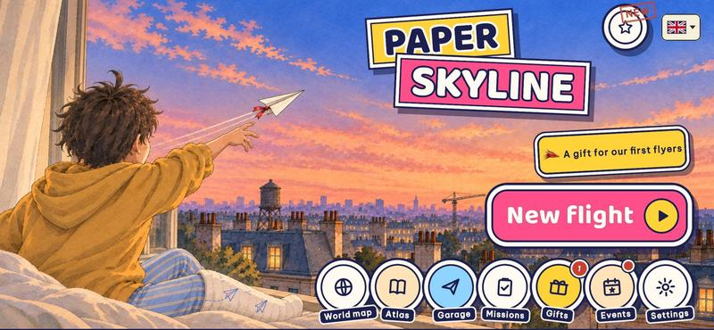
A wish takes flight 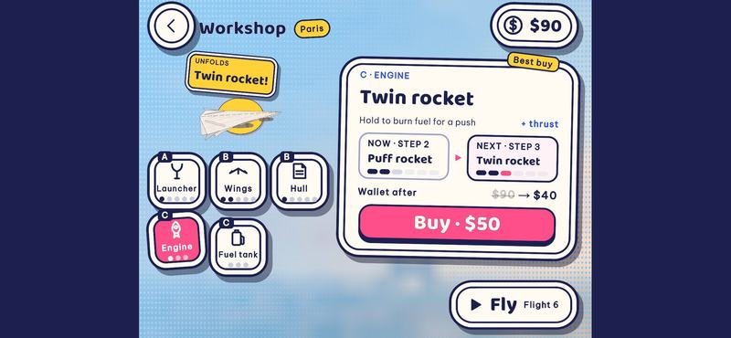
Build a better plane 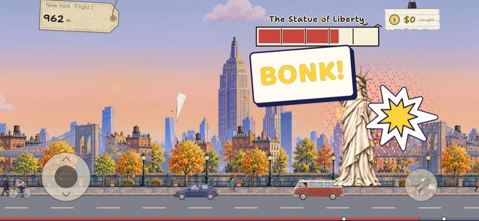
Get past the keepers 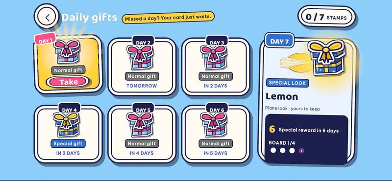
Gifts along the way 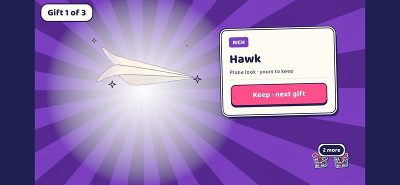
Find your next look
New in 2.0.5
- Five keeper minigames: Gridlock, Neon Flow, Parade Line, Rink Shootout and Scooter Flow
- A Minigames page on the title, with 30 levels a game and a ranking by nickname
- Friends you help say thank you at the end
- Each city card shows its Stages as a trail, with the plane on the one you are flying
- Pick a trail for the plane, like Sakura Petals or Carnival Confetti
- Émile, Imani and Hana: residents with stories, quests and voices
- The Unfinished Song, across Paris and New York
- Twenty-one cities, three Stages each
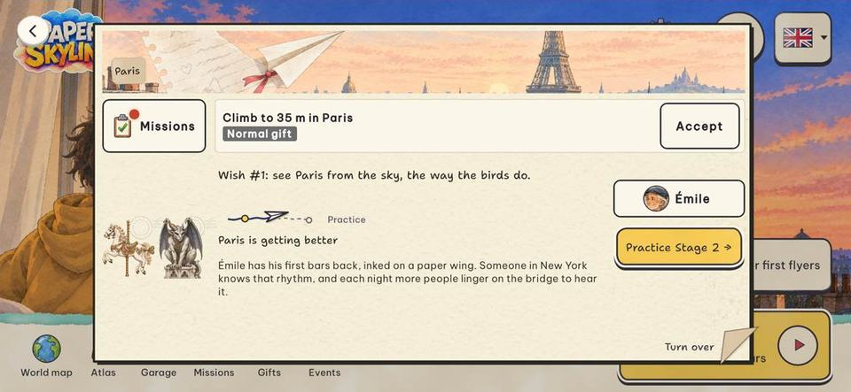
Plainly
No account, nothing to buy
Your progress stays on your device. Paris comes with the app, and each other city downloads when you choose to fly there, with nothing about you sent. Anonymous gameplay stats help us balance the game, and you can switch them off. The only ad is one you choose to watch, for bonus cash on Android. The full policy is short.
Landscape, two thumbs
Drag back to throw. In the air, climb, dive and boost with the buttons under your thumbs.
Easy, Medium or Hard
Pick a mode on each city's card. On Easy the keepers' attacks only knock a few coins loose; on Medium their weak points hide and they fight back; on Hard they strike first, hit two lanes, and the fight runs against a clock. Every cleared city can be flown again.
Where to get it
Paper Skyline is on Google Play for Android and on the App Store for iPhone and iPad. It speaks English, Tiếng Việt, Bahasa Indonesia, Español, Français, Português (Brasil), 日本語, 한국어 and 简体中文. Questions go to the support page, and the devlog lists what changed in each version.